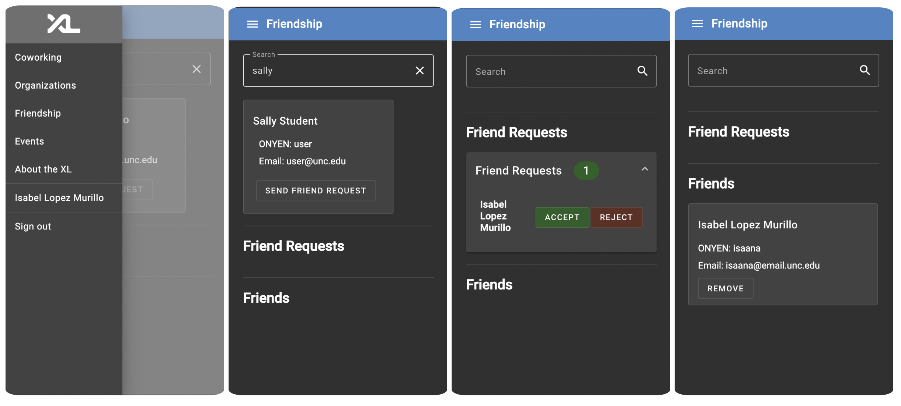
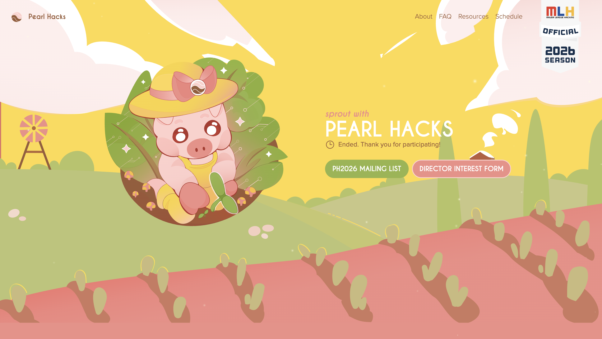
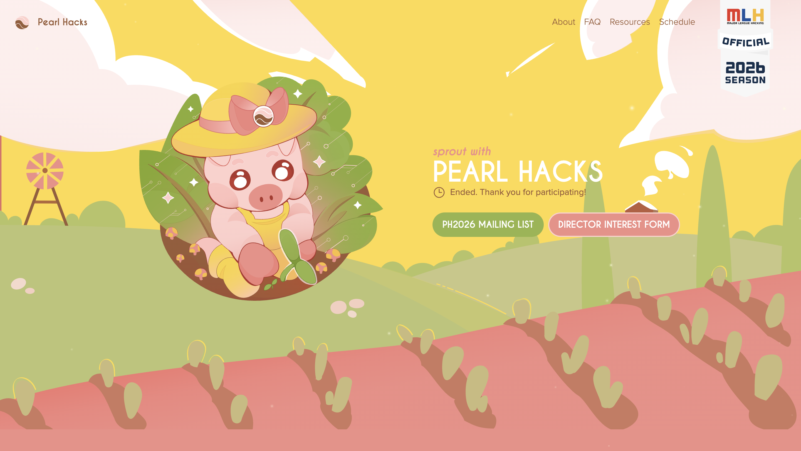

Desktop
X
About
X

Hello!
My name is Isabel Lopez Murillo, and I am a Physics and Astronomy graduate student at UNC-Chapel HIll.
I am currently a research assistant on the Young Worlds Lab team, focusing on computational astronomy and AI/ML techniques applied to physics.
My research interests include young star and exoplanet analysis and discovery. I currently work on gleaning Transit Timing Variations (TTVs) from young systems and photometry analysis:

Research
I also work as a website developer and graphics artist for organizations and professional astronomy art:

Projects
You can also find my professional and technical experience outlined in my CV!

CV
Let's get in touch! Feel free to contact me at my email anaisabellopez2021@gmail.com, or using the link below:

Contact
Research
X
Research
As an graduate researcher in the Young Worlds Lab led by Dr. Andrew Mann at UNC-Chapel Hill, I work on studying young exoplanets and star systems.
My research interests include data analysis methods applied to computational astronomy, photometry for planetary detection and characterization, and the composition of young planets.
My current research focuses on completing a survey of transit timing variations (TTVs) on young systems, a way to finding mass measurements by analyzing the gravitational interactions between planets.

You can read more about my work with TTVs in young systems on my first-author paper, or check out the code used here.
List of Publications
Barber, M.G., Mann, A.W., et al. TESS Investigation—Demographics of Young Exoplanets (TI-DYE). III. An Inner Super-Earth in TOI 2076. AJ 170, 32 (2025) https://doi.org/10.3847/1538-3881/add7db
Barber, M.G., Mann, A.W., et al. A giant planet transiting a 3-Myr protostar with a misaligned disk. Nature 635, 574–577 (2024). https://doi.org/10.1038/s41586-024-08123-3.
Thao, P.C., Mann, A.W., et al. TESS Hunt for Young and Maturing Exoplanets (THYME). X. A Two- planet System in the 210 Myr MELANGE-5 Association. AJ 168, 41 (2024). https://doi.org/10.48550/arXiv.2406.05234.
Projects
X
Projects
Professional Astronomy Artwork
I enjoy bringing my passion for creative work to science applications, and do commissioned astronomy artwork for PhD graduation gifts and proomotional artwork. Examples of my work are included below:


UNC-CSXL Friendship System
Role: Full Stack Development, Graphic Design
Angular, TypeScript, HTML/CSS, Python, FastAPI, SQLAlchemy, PostgreSQL, Docker
Completed during the CSXL Internship at UNC, as part of COMP 590: Foundations of Software Engineering. The scope of the project was to design an add-on to the Computer Science Experience Lab (CSXL) web application used for administration and student purposes of the collaborative technology space.
We worked on an instance of the live codebase of the CSXL website. Our team engineered a Friendship System addition to the program, allowing users to send friend requests to each other and see when their friends are "online", or checked in to the CSXL.

Above: demo displaying our Friendship functionality addition and process of searching for a student to friend and viewing/accepting friend request.
2024, 2025 Pearl Hacks Websites
Role: Graphic Design, Illustration
Adobe Illustrator, Figma
Developed for Pearl Hacks, a UNC student run/led organization bringing a beginner-friendly hackathon for women and gender non-conforming students in the UNC-Chapel Hill area.
As Director of Design, I lead development on Pearl Hacks' art direction, illustrations, promotional materials, and graphic design. Graphics were illustrated using Adobe Illustrator and Figma.

 

iGEM Wikis
Role: Project Management, Front End Development, Graphic Design
HTML/CSS, Flask, Javascript
Developed for UNC's iGEM team. iGEM, or International Genetically Engineered Machine, is a yearly competition for collegiate teams to engineer a solution to a problem using synthetic biology. Every year, one of the deliverables is a developed website detailing the project in full detail. I have had the chance to lead Wiki development since the inception of UNC's iGEM team in 2022.
Our 2023 project focused on creating a sense and treat system to eliminate P. aeruginosa infections in skin wounds. The website design was focused on communicating our project efficiently and clearly while maintaining a fluid UI/UX.

DMARC Analyzer
Solo Project
HTML/CSS, JavaScript
Web application developed to help Shopify vendors parse DMARC aggregate reports returned from setting up SPF/DKIM/DMARC frameworks on their web hosts. Pulls information from XML aggregate reports and returns information to user in an interactive and easy to digest format for users not as familiar with email authentication protocol.
This application runs on static memory only and does not log user or XML file information. You can find the GitHub repository for this project here.

Personal Website
Solo Project
HTML/CSS, Javascript
This website! This is a personal project I completed in a few months during summer 2024 while preparing to apply to graduate school and industry jobs. This site uses pure HTML/CSS and both custom JavaScript as well as jQuery for movement functionality. I wanted to work on a project that encapsulates both my personality and my love for 90s style interfaces and graphic design in a readable and fun-to-use personal website portfolio. The design and interface were modeled after the Windows 98 operating system, and all tab/footer design and stylization was done using custom CSS.

90s Weather App
Solo Project
HTML/CSS, Express, JavaScript
Developed as an optional assignment for COMP 426: Modern Web Programming. This web application uses client-side Javascript to fetch and inject live weather information for the UNC-Chapel Hill area. You can view the weather tab by double-clicking the "Weather" desktop icon in this website! You can also find the GitHub repository for this project here.

Site Specs
X
Site Specifications
This website was developed by Ana Isabel Lopez Murillo and is hosted under a
CC BY-NC-ND 4.0 license.
You can find the repository used to create this website here.
Music used:
Attitude - Luxury Elite
Second Floor - 猫 シ Corp.
Slice of Paradise - Karl Casey
Windows 98 icons provided by Alex Meub
Gifs provided by GifCities of the Internet Archive.
Weather
X
Recycling Bin
X